| Version | 1.0 |
| System | Authentication System |
| Module | AUTH - Authentication |
| Database | auth_db |
| Date | 2026-07-24 |
| Author | Nam Nguyen |
| Status | Draft |
This document defines the software requirements for the Authentication module of the Authentication System.
The Authentication module handles:
| Module | Dependency Type | Description |
|---|---|---|
| SMS | Async (RabbitMQ) | Send verification SMS via SMS module |
| Async (RabbitMQ) | Send verification/reset emails via EMAIL module | |
| LOG | Async (RabbitMQ) | Publish auth events to Logger module |
| Term | Definition |
|---|---|
| FR | Functional Requirement |
| NFR | Non-Functional Requirement |
| UC | Use Case |
| JWT | JSON Web Token |
| OTP | One-Time Password |
| RBAC | Role-Based Access Control |
| Aspect | Value |
|---|---|
| Module Code | AUTH |
| Module Name | Authentication |
| Description | User accounts, login, roles, sessions, verification |
| Database | auth_db |
| Tables | auth_users, auth_sessions, auth_accounts, auth_verification, auth_roles, auth_user_roles |
| Tech Stack | NestJS, Better Auth, Drizzle ORM, PostgreSQL |
| Req ID | Module | Requirement | Use Case | Priority | Description |
|---|---|---|---|---|---|
| FR-001 | AUTH | User Registration | UC-01 | High | System shall allow users to register with email or phone + password + name |
| FR-002 | AUTH | User Login | UC-02 | High | System shall authenticate users via email or phone + password and return JWT tokens |
| FR-003 | AUTH | Logout | UC-03 | High | System shall invalidate user session on logout |
| FR-004 | AUTH | Refresh Token | UC-04 | High | System shall issue new access token using refresh token |
| FR-005 | AUTH | Reset Password (Email) | UC-05 | Medium | System shall send password reset link to user's email via EMAIL module |
| FR-006 | AUTH | Reset Password (Phone) | UC-06 | Medium | System shall send OTP to user's phone for password reset |
| FR-007 | AUTH | Change Password | UC-07 | Medium | System shall allow authenticated users to change password |
| FR-008 | AUTH | Verify Email | UC-08 | High | System shall send verification email via EMAIL module and verify via link |
| FR-009 | AUTH | Verify Phone | UC-09 | High | System shall verify phone via OTP code |
| FR-010 | AUTH | Manage Users | UC-10 | Medium | Admin shall be able to list, view, update, and delete users |
| FR-011 | AUTH | Manage Roles | UC-11 | Medium | Admin shall be able to create roles and assign to users |
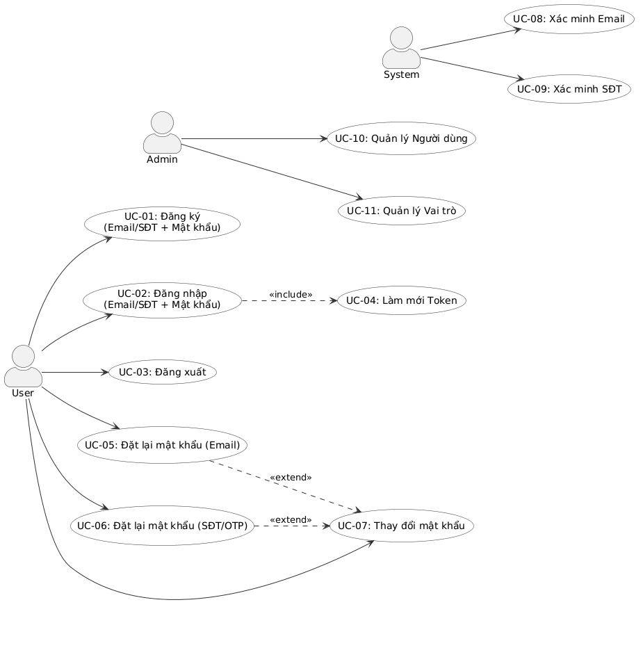
| Aspect | Description |
|---|---|
| Actor | Guest (unauthenticated user) |
| Preconditions | User is not logged in; user does not have an existing account |
| Main Flow | 1. User navigates to registration page 2. User enters name, email (or phone), and password 3. System validates input (email/phone format, password strength) 4. System creates user account with hashed password 5. System sends verification email/SMS via EMAIL/SMS module 6. System returns success response with user ID |
| Alternative Flows | 4a. Email/phone already exists → System returns 409 Conflict 4b. Password too weak → System returns 400 Validation Error 5a. Verification service unavailable → Account created, verification queued |
| Postconditions | User account created (unverified); verification email/SMS sent |
| Related FR | FR-001 |
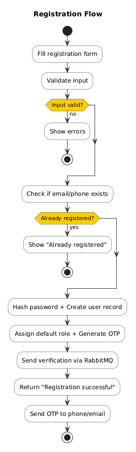
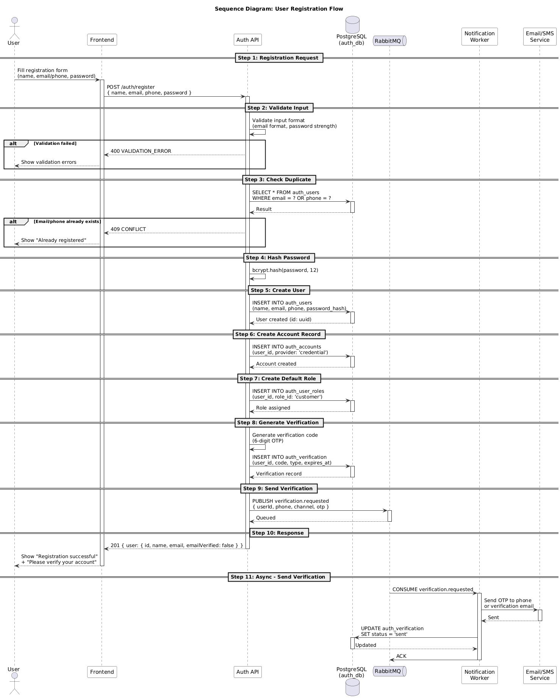
| Aspect | Description |
|---|---|
| Actor | Registered user |
| Preconditions | User has a registered account; account is active |
| Main Flow | 1. User navigates to login page 2. User enters email/phone and password 3. System validates credentials against database 4. System generates JWT access token (15min) and refresh token (7 days) 5. System creates session record 6. System returns tokens and user profile |
| Alternative Flows | 3a. Invalid credentials → System returns 401 Unauthorized 3b. Account banned → System returns 403 Forbidden 3c. Account inactive → System returns 403 Forbidden |
| Postconditions | User is authenticated; session created; tokens issued |
| Related FR | FR-002 |
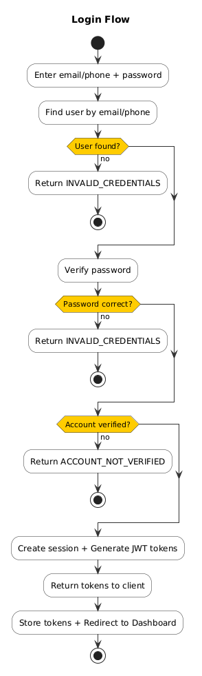
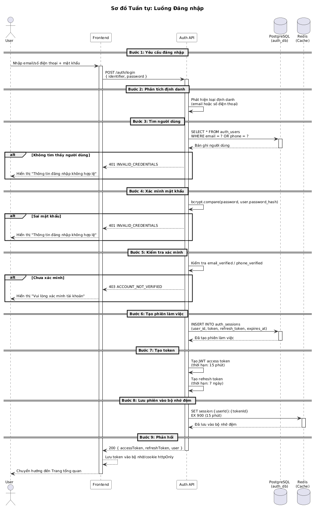
| Aspect | Description |
|---|---|
| Actor | Authenticated user |
| Preconditions | User is logged in with valid session |
| Main Flow | 1. User clicks logout button 2. System receives logout request with access token 3. System invalidates current session (deletes session record) 4. System returns success response |
| Alternative Flows | 2a. Token expired → Session already invalid, return success |
| Postconditions | Session invalidated; tokens no longer valid |
| Related FR | FR-003 |
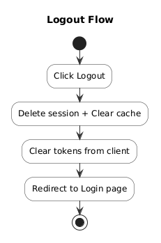
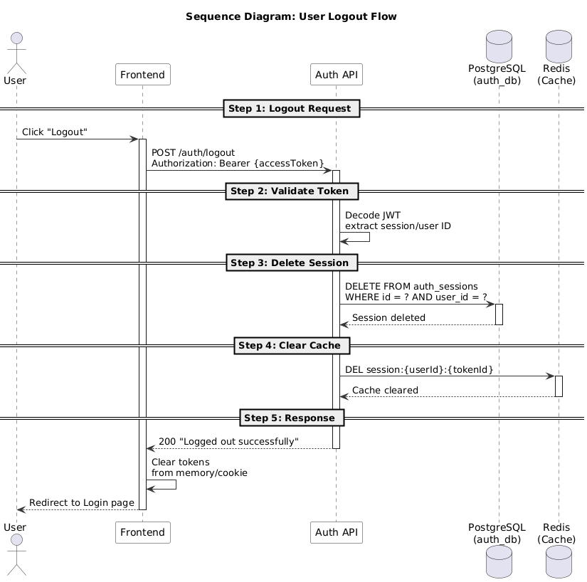
| Aspect | Description |
|---|---|
| Actor | Authenticated user (token expired) |
| Preconditions | User has a valid refresh token; access token expired |
| Main Flow | 1. Client detects access token expired 2. Client sends refresh token to /auth/refresh 3. System validates refresh token and session 4. System generates new access token 5. System returns new access token |
| Alternative Flows | 3a. Refresh token expired → System returns 401, user must re-login 3b. Session not found → System returns 401 |
| Postconditions | New access token issued; session remains valid |
| Related FR | FR-004 |
| Aspect | Description |
|---|---|
| Actor | Registered user (forgot password) |
| Preconditions | User has a registered email; user is not logged in |
| Main Flow | 1. User clicks "Forgot Password" 2. User enters email address 3. System generates password reset token 4. System sends reset link via EMAIL module 5. User clicks link in email 6. User enters new password 7. System updates password hash 8. System invalidates all existing sessions |
| Alternative Flows | 2a. Email not found → System returns success (don't reveal if email exists) 4a. Email delivery failed → System logs error, user can retry |
| Postconditions | Password updated; all sessions invalidated |
| Related FR | FR-005 |
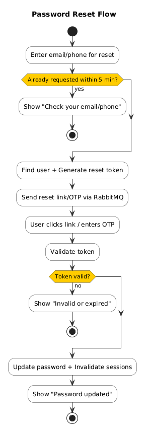
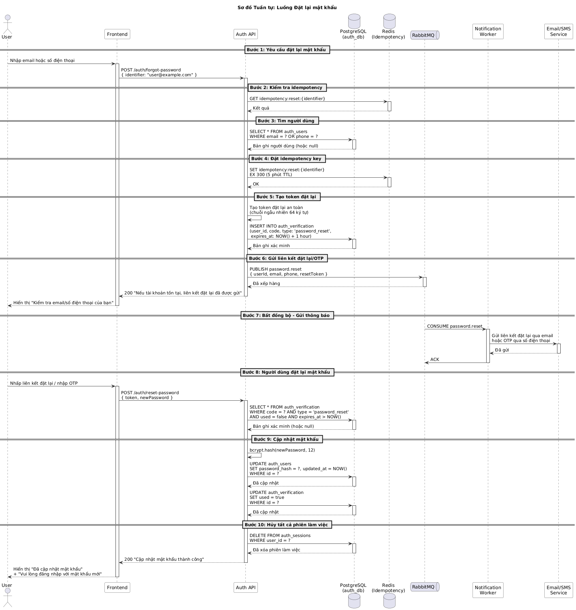
| Aspect | Description |
|---|---|
| Actor | Registered user (forgot password) |
| Preconditions | User has a registered phone; user is not logged in |
| Main Flow | 1. User clicks "Forgot Password" 2. User selects phone option and enters phone number 3. System generates OTP code 4. System sends OTP via SMS module 5. User enters OTP and new password 6. System verifies OTP 7. System updates password hash 8. System invalidates all existing sessions |
| Alternative Flows | 2a. Phone not found → System returns success (don't reveal if phone exists) 6a. OTP expired → System returns 422, user can request new OTP 6b. OTP invalid → System returns 422 |
| Postconditions | Password updated; all sessions invalidated |
| Related FR | FR-006 |
| Aspect | Description |
|---|---|
| Actor | Authenticated user |
| Preconditions | User is logged in |
| Main Flow | 1. User navigates to change password page 2. User enters current password and new password 3. System verifies current password 4. System updates password hash 5. System returns success response |
| Alternative Flows | 3a. Current password incorrect → System returns 401 4a. New password same as current → System returns 400 |
| Postconditions | Password updated; existing sessions remain valid |
| Related FR | FR-007 |
| Aspect | Description |
|---|---|
| Actor | Registered user |
| Preconditions | User has registered email; email not yet verified |
| Main Flow | 1. User registers or requests verification 2. System sends verification email with link/token via EMAIL module 3. User clicks verification link 4. System validates token 5. System marks email_verified = true 6. System returns success |
| Alternative Flows | 4a. Token expired → System returns 400, user can request new verification 4b. Token invalid → System returns 400 |
| Postconditions | Email verified; user can access email-based features |
| Related FR | FR-008 |
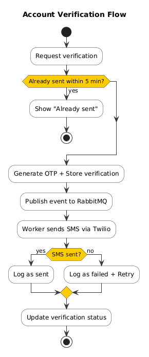
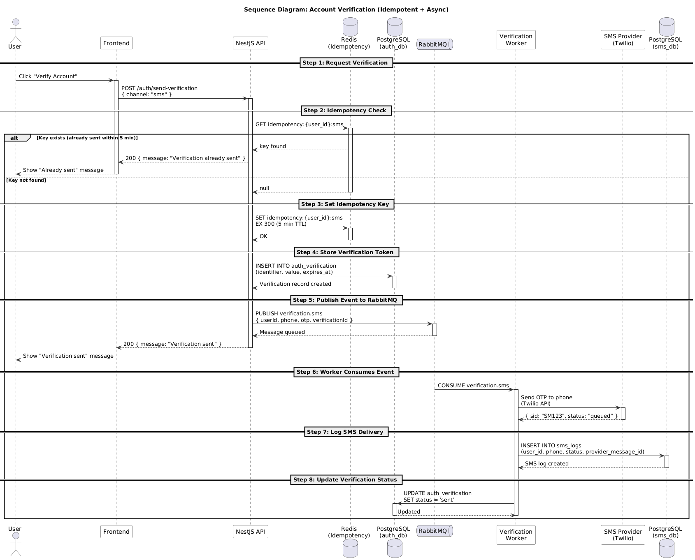
| Aspect | Description |
|---|---|
| Actor | Registered user |
| Preconditions | User has registered phone; phone not yet verified |
| Main Flow | 1. User requests phone verification 2. System sends OTP via SMS module 3. User enters OTP code 4. System verifies OTP 5. System marks phone_verified = true 6. System returns success |
| Alternative Flows | 4a. OTP expired → System returns 422, user can request new OTP 4b. OTP invalid → System returns 422 |
| Postconditions | Phone verified; user can access phone-based features |
| Related FR | FR-009 |
| Aspect | Description |
|---|---|
| Actor | Admin user |
| Preconditions | User is logged in with admin role |
| Main Flow | 1. Admin navigates to user management 2. System displays list of users (with pagination, search) 3. Admin can view user details, update user, or delete user 4. System performs requested operation 5. System returns success response |
| Alternative Flows | 3a. User not found → System returns 404 3b. Unauthorized → System returns 403 |
| Postconditions | User record updated or deleted |
| Related FR | FR-010 |
| Aspect | Description |
|---|---|
| Actor | Admin user |
| Preconditions | User is logged in with admin role |
| Main Flow | 1. Admin navigates to role management 2. System displays list of roles 3. Admin can create new role, assign role to user, or remove role 4. System performs requested operation 5. System returns success response |
| Alternative Flows | 3a. Role name already exists → System returns 409 3b. User not found → System returns 404 |
| Postconditions | Role created/assigned/removed; permissions updated |
| Related FR | FR-011 |
| Req ID | Category | Requirement | Target |
|---|---|---|---|
| NFR-001 | Performance | Login response time | < 500ms (p95) |
| NFR-002 | Performance | Registration response time | < 1s (p95) |
| NFR-003 | Security | Password hashing | bcrypt with 12 rounds |
| NFR-004 | Security | Token expiry | Access: 15min, Refresh: 7 days |
| NFR-005 | Security | Rate limiting | 10 req/min for auth endpoints |
| NFR-006 | Availability | Service uptime | 99.9% |
| NFR-007 | Scalability | Concurrent users | 1000+ simultaneous logins |
| Req ID | Requirement | DB Table | API Endpoint |
|---|---|---|---|
| FR-001 | User Registration | auth_users, auth_accounts | POST /auth/register |
| FR-002 | User Login | auth_users, auth_sessions | POST /auth/login |
| FR-003 | Logout | auth_sessions | POST /auth/logout |
| FR-004 | Refresh Token | auth_sessions | POST /auth/refresh |
| FR-005 | Reset Password (Email) | auth_verification | POST /auth/forgot-password |
| FR-006 | Reset Password (Phone) | auth_verification | POST /auth/forgot-password-phone |
| FR-007 | Change Password | auth_users | POST /auth/change-password |
| FR-008 | Verify Email | auth_verification, auth_users | GET /auth/verify-email |
| FR-009 | Verify Phone | auth_verification, auth_users | POST /auth/verify-phone |
| FR-010 | Manage Users | auth_users | GET/PUT/DELETE /users/:id |
| FR-011 | Manage Roles | auth_roles, auth_user_roles | GET/POST /roles |